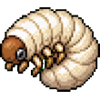

Tap a stage to read its story.
Scarabby is a plump cream-colored grub, its segmented body soft and glistening like fresh bark. Two tiny black eyes sit at the tip of its rounded head, and it moves by slowly rippling its body along the forest floor. Hidden deep in the rotting wood of the Dark Forest, it feeds on shadow-soaked heartwood that stains its insides with darkness. Guardians rarely see it - it retreats at the first snap of a twig, burying itself in mulch until the footsteps fade away.
Field note: A Scarabby curls completely still when touched, becoming nearly indistinguishable from a pale pebble.
Dark Forest. Scarabby and its family are found in the Dark Forest. See everyone who lives there.
Share a Bond Food that matches its types to become friends. Scarabby loves:
A Bond Food is not a trick. It joins your spirit with the Kimuro's spirit, and only when it chooses you.
Print the Kimuro adventure packs: mazes, cards, a board game and Bond Mark medals.
See the printable packs